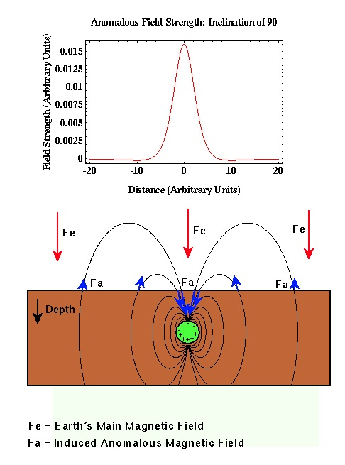

Magnetic Anomaly: Magnetized Sphere at the North Pole
Let's now qualitatively construct what the magnetic anomaly of a metallic sphere located beneath the north pole would look like. The geometry of the sphere, the Earth's main magnetic field, the field lines associated with the anomalous field, the direction and magnitude of the anomalous field, and a plot of the intensity of the anomalous field that would be recorded are shown.

At the north (magnetic) pole, the Earth's main magnetic field, Fe, points straight down. Because the buried sphere is composed of a material with a non-zero susceptibility, the Earth's main magnetic field causes the sphere to produce an induced magnetic field. Field lines associated with this induced field are shown by black lines, and the magnitude and direction of the induced, anomalous field, Fai, at the surface of the earth are shown by the blue arrows.
The total field, whose strength will be recorded on a proton precession magnetometer, will be sum of the main field, Fe, and the induced, anomalous field, Fa. Notice that to either side of the sphere, the anomalous field points in the opposite direction as the main field. Thus, when the main field is removed from our observations we will observe negative values for the anomalous field. Near the sphere, the anomalous field points in the same direction as the main field. Therefore, when the main field is removed, we will observe positive values for the anomalous field.
In this case, the anomalous magnetic field is symmetric about the center of the buried sphere, is dominated by a central positive anomaly, and is surrounded on both sides by smaller negative anomalies.